2026 March
USUCGER Award Recognition
Dr. Cheng Zhu received the USUCGER 2026 Early Career Educator Award, recognizing creative contributions to geotechnical engineering education through community engagement and curriculum development.

 Rowan UniversityDepartment of Civil and Environmental Engineering
Rowan UniversityDepartment of Civil and Environmental Engineering2026 March
Dr. Cheng Zhu received the USUCGER 2026 Early Career Educator Award, recognizing creative contributions to geotechnical engineering education through community engagement and curriculum development.
2026 March
Deza joined our group in Fall 2025. She worked on multi-physical characterization of soil-climate interactions. She received the prestigious Delaware Valley Geo-Institute Student Scholarship this year. Well deserved and congratulations, Deza!
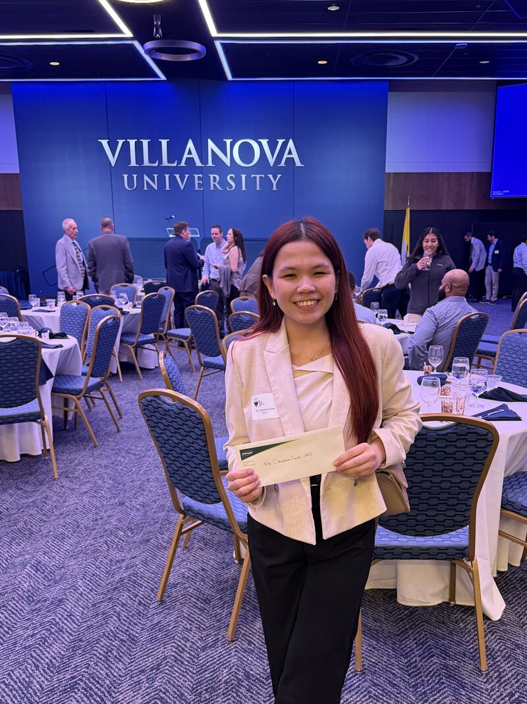
2026 January
Graduate students Tyler Casas and Md Redwan Sammir represented the GeoSMART group at TRB 2026 with two presentations: a poster titled "Soil Conductivity Reconstruction via Multi-Frequency Electromagnetic Induction Data" and a podium presentation titled "A Multi-Frequency Electromagnetic Induction Sensor for Subsurface Soil Characterization." The work was supported by the Cold Regions Research and Engineering Laboratory and CREATEs.
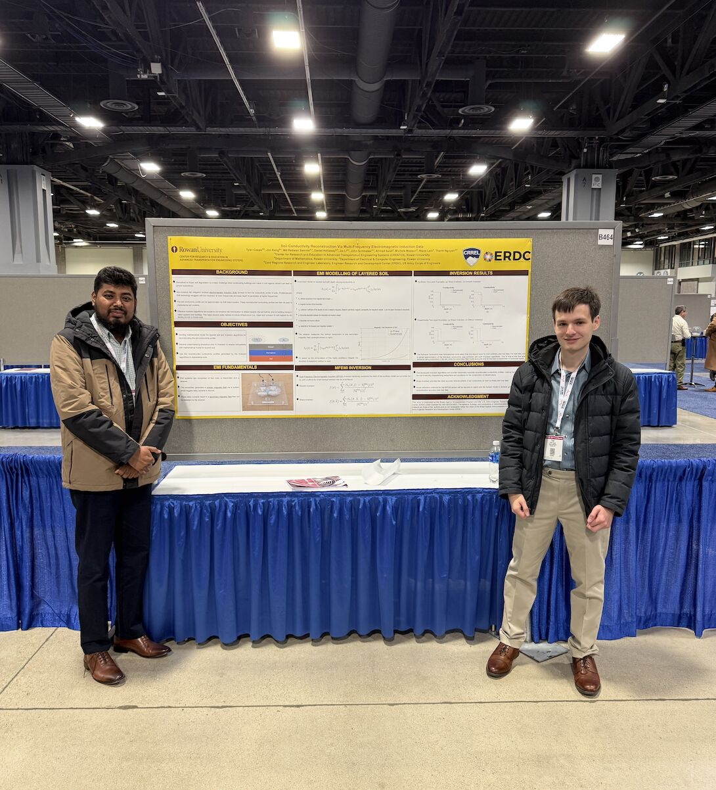
2023 November
The annual project meeting of CREATEs and CRREL was held from November 6 to 9, 2023 at South Jersey Technology Park. Together with other collaborators, Dr. Zhu's team members including Mr. Chenchen Huang and Mr. Weiling Cai presented their project updates and new phases about iFROST Mapper and pavement modeling projects. Good job everyone for completing the presentations!
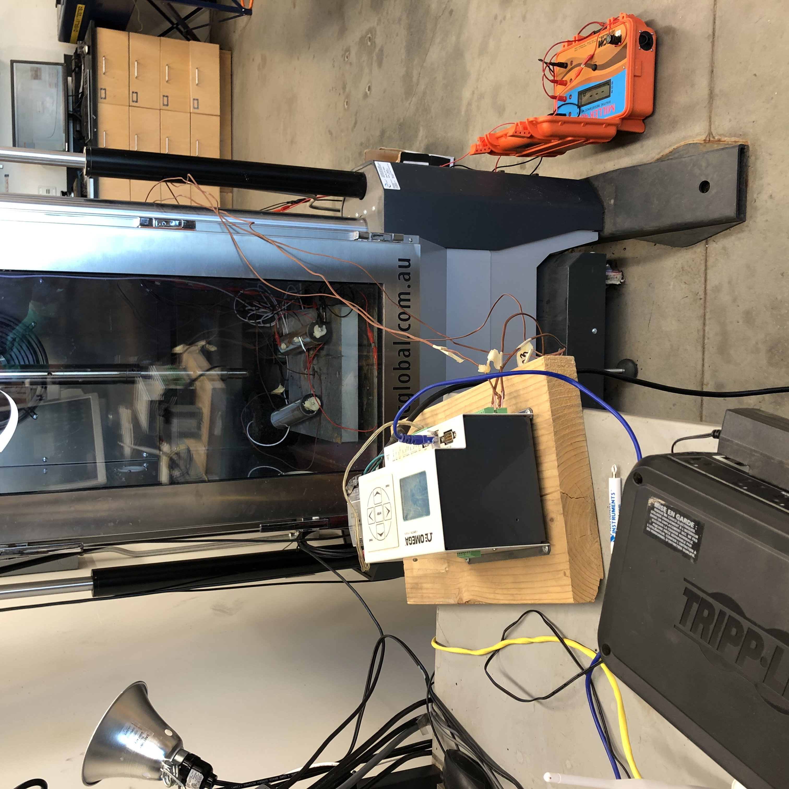
2023 June
Mr. Rui Liu passed his Ph.D. dissertation defense, entitled "Evaluating frozen soil properties with electrical resistivity measurement and electro-magnetic induction methods" in front of a committee constituted of Dr. Cheng Zhu, Dr. Yusuf Mehta, Dr. John Schmalzel, Dr. Gilson Lomboy, and Dr. Benjamin Barrowes. Congratulations Rui!
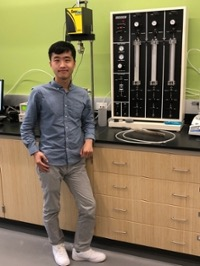
2023 January
Postdoctoral fellow Shaini and doctoral student Rui gave two podium presentations at TRB 2023 in Washington DC. Their research shows recent results on electrical resistivity measurement of frozen soils and biochar-improved soil responses under changing climate conditions.
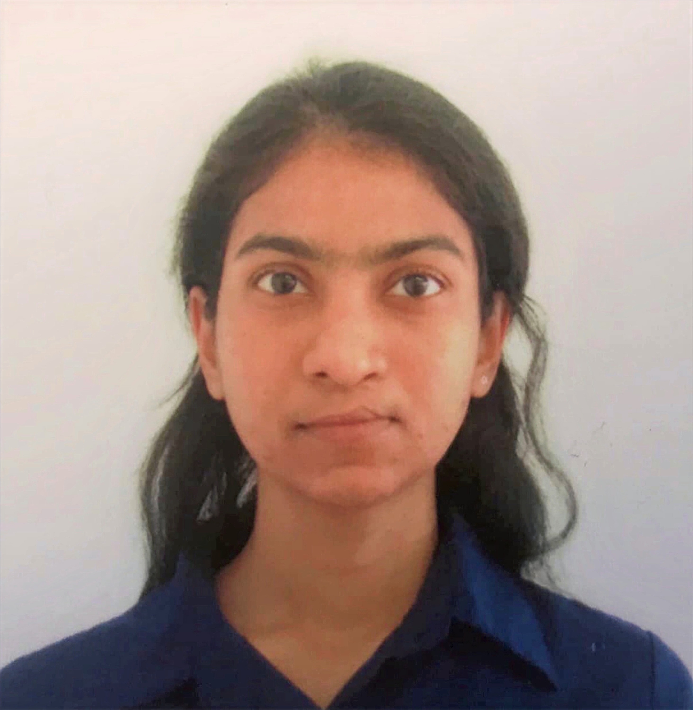
2022 December
Ph.D. student Mr. Chenchen Huang passed both his qualification exam and dissertation proposal defense in December 2022. His proposal focused on multi-scale numerical analyses of construction materials for improved resilience and sustainability of civil infrastructures.
2022 May
The annual project meeting of CREATEs and ERDC was held from May 16 to 19, 2022 at South Jersey Technology Park. Dr. Cheng Zhu, Rui Liu, Chenchen Huang, and Jim Kang presented project updates and new phases about iFROST Mapper and pavement modeling projects.
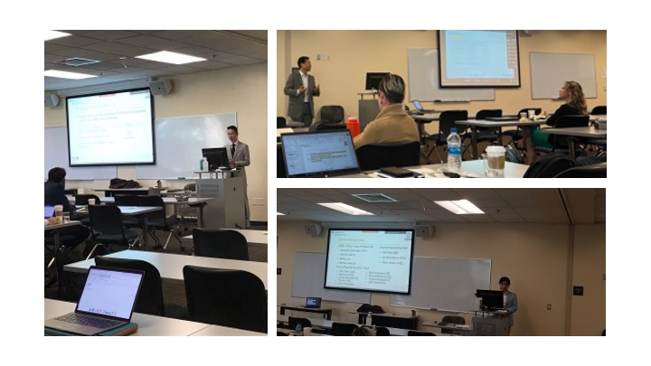
2022 March
Three Rowan University students were highlighted at the 2022 Delaware Valley Geo-Institute Student Night event held at Villanova University. Kaniz Roksana gave a podium presentation, Chenchen Huang gave a poster presentation, and undergraduate student Kayla King won the DVGI Student Scholarship.
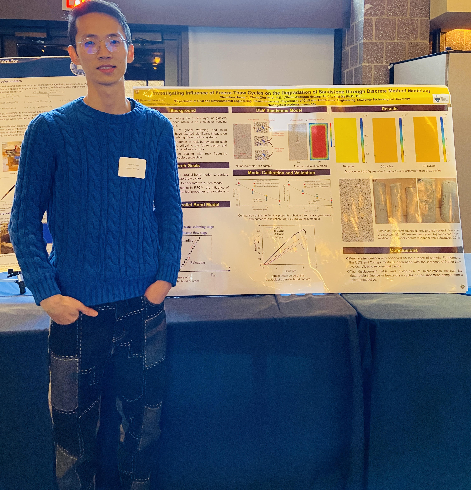
2022 February
Rowan University students Kaniz Roksana, Kayla King, Sarah Herchenroder, Daniel Horner, Nicolas Zugaib, Husain Ali, and Jacob Christy won the Outstanding Student Paper Award for their paper titled "Remediation of Soil Desiccation Cracking by Bioremediation Techniques."
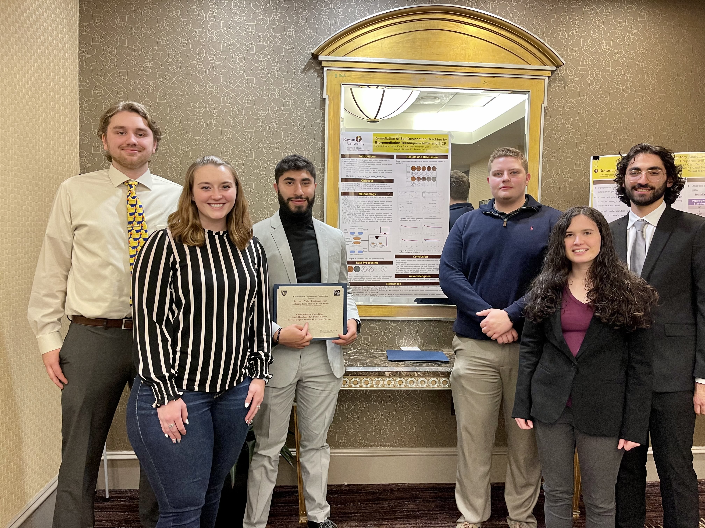
2022 January
Dr. Cheng Zhu and his research team were approved for two poster presentations at the 101st annual meeting of the Transportation Research Board: foamed concrete as an insulation layer for cold-region pavements and thermally/mechanically balanced insulated pavement design.
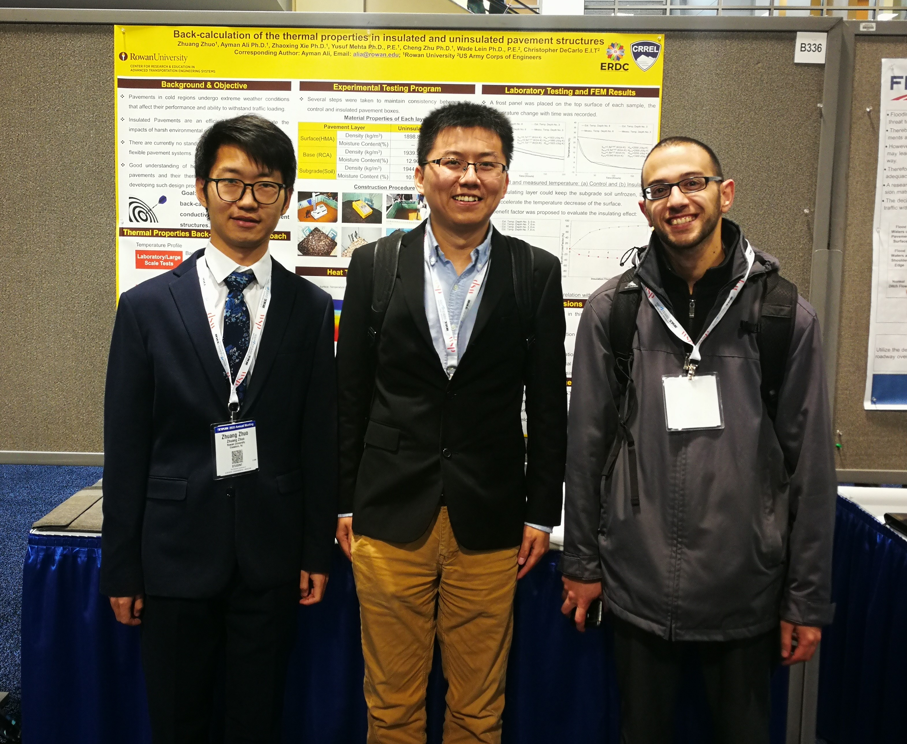
2021 December
The fall semester ended with three Engineering Clinic project presentations: electrical properties of soil during freeze-thaw conditions, soil stabilization through bio-cementation, and mixed reality games for active geotechnical learning.
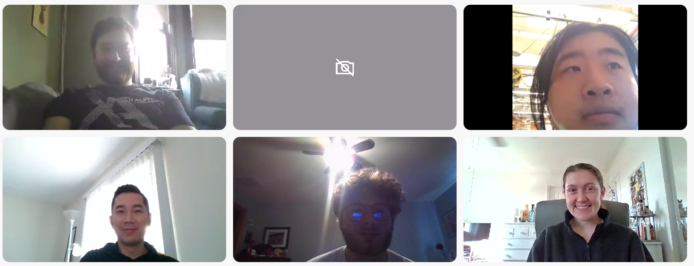
2021 November
Zhuang Zhuo passed his Ph.D. dissertation defense, entitled "Design and Analysis of Flexible Insulated Pavement for Cold Region Applications." Congratulations Zhuang!
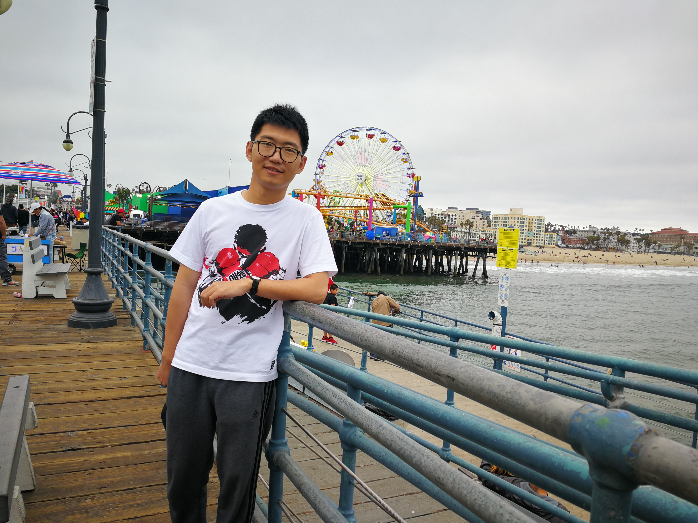
2021 November
Dr. Cheng Zhu and Ph.D. student Zhuang Zhuo presented insulated pavement research at Geo-Extreme 2021 in Savannah, Georgia. The presentation gained interest from scholars and received valuable comments.
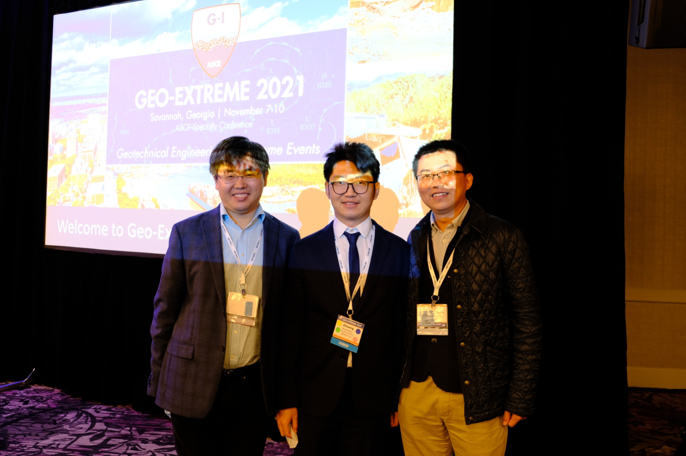
2021 September
Dr. Cheng Zhu and Ph.D. student Zhuang Zhuo presented project updates about the iFROST Mapper and insulated pavement project during the annual CREATEs and ERDC project meeting.
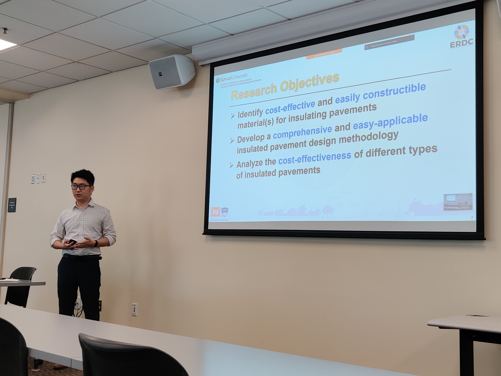
2021 February
The Engineers' Club of Philadelphia hosted the 2021 Delaware Valley Engineers Week virtually. Rowan University students won two of the three Outstanding Student Paper Awards. Great job everyone!
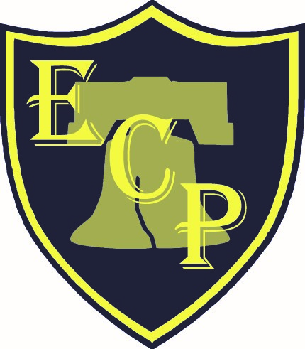
2021 January
The group welcomed two Ph.D. students, Chenchen Huang and Kaniz Roksana, and postdoctoral fellow Dr. Shaini Aluthgun Hewage. Welcome to Rowan University!
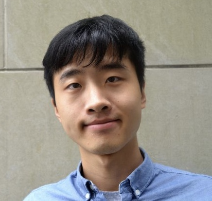
2020 December
Ph.D. student Rui Liu passed both his qualification exam and dissertation proposal defense. Rui continued research on electrical properties of frozen soil while aiding the iFROST Mapper project funded by the US Army Corps of Engineers.
2020 May
The group congratulates Mark Vail on earning his M.S. degree in Civil Engineering. His work focused on bio-remediation of desiccation cracks in clay soils.
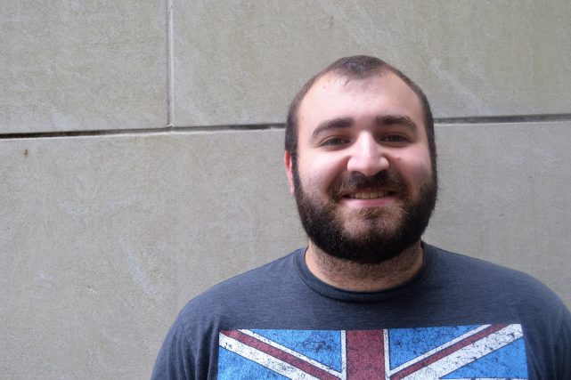
2020 March
The 2020 Delaware Valley Geo-Institute Students Night was held on March 11 at Villanova University. Rowan Ph.D. students Zhuang Zhuo and Rui Liu presented research on insulated pavements and frozen soil electrical resistivity.
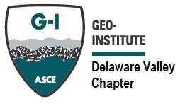
2020 February
Mark Vail, Michael Moroski, Nathaniel Maute, Luke Anderson, and Jiwon Yang were recognized for work on crack remediation using bio-cement and bottom ash admixture for clay under wetting-drying cycles.
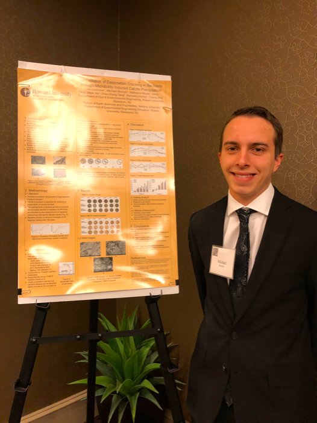
2020 January
At the 99th Annual Transportation Research Board Meeting, Rowan M.S. student Mark Vail and Ph.D. student Zhuang Zhuo presented research on MICP-treated bentonite and insulated pavement systems.
2019 November
Zhuang Zhuo passed his Ph.D. Qualification Exam on experimental and numerical investigations of insulated pavement in cold regions.
2019 August
Rui Liu joined the research lab as a Ph.D. student after earning B.Eng. and M.S. degrees in Geotechnical Engineering from Southeast University, Nanjing, China. Welcome to Rowan Rui!
2019 June
Rowan M.S. student Danilo Zeppilli received a Chateaubriand Fellowship and continued a research internship at École des Ponts ParisTech.
2019 June
Mark Vail attended the EGRWSE conference at the University of Illinois at Chicago and presented work on remediation of desiccation cracking in bentonite through MICP.
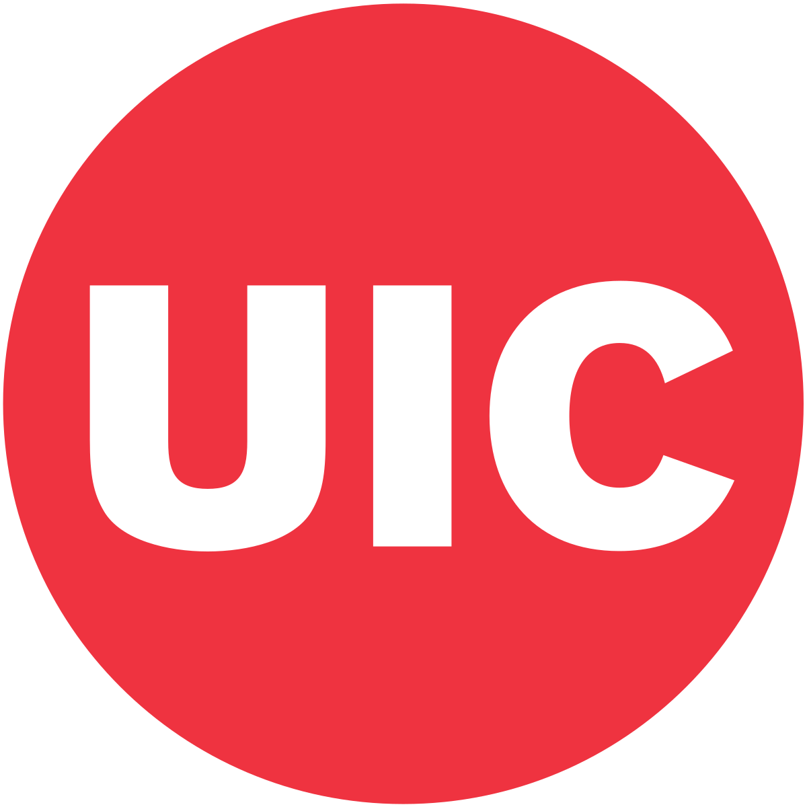
2019 June
The SHAKER Shield was named the Outstanding Rowan Civil Engineering Clinic for the 2018-2019 academic year. The project designed a seismic-protection device for individuals and small groups.
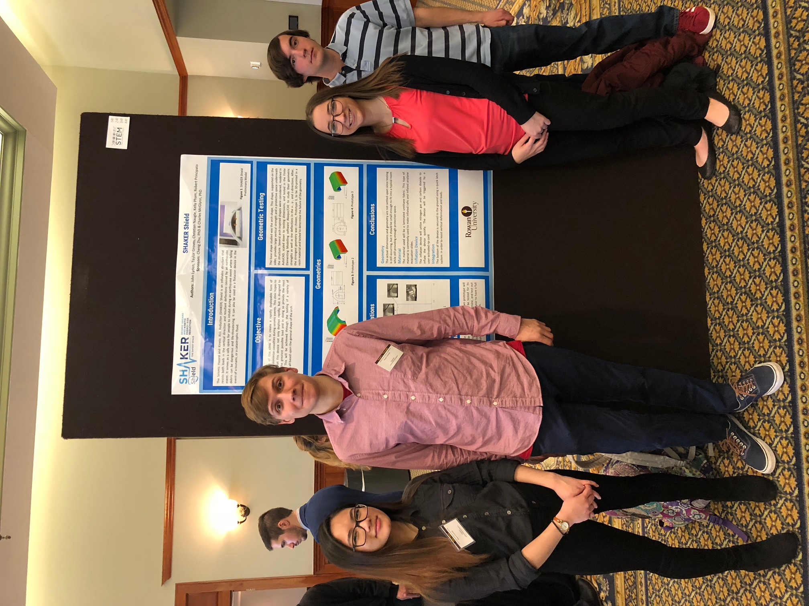